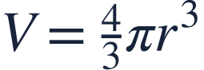
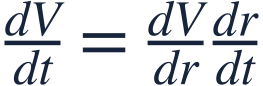
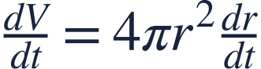
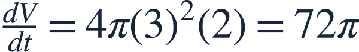
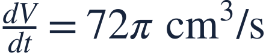
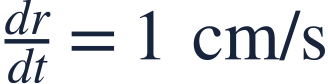

Related rates foundations
기본 관련변화율

Related rates connect quantities that change together with time.
관련변화율은 시간에 따라 함께 변하는 양들을 연결합니다.

Related rates connect quantities that change together with time.
관련변화율은 시간에 따라 함께 변하는 양들을 연결합니다.
The sphere keeps its shape while its radius changes.
구의 모양은 유지되고 반지름이 시간에 따라 변합니다.

Differentiate the geometric relationship before inserting the radius at this instant.
이 순간의 반지름을 넣기 전에 기하 관계식을 미분합니다.

The chain rule supplies the radius rate.
연쇄법칙에 따라 반지름의 변화율을 곱합니다.

Now use the instantaneous radius and its rate.
이제 그 순간의 반지름과 변화율을 대입합니다.

The positive volume rate has cubic length units per second.
부피의 양의 변화율은 초당 세제곱 길이 단위를 가집니다.
Setting r=3 before differentiating would incorrectly turn a changing variable into a constant.
미분 전에 r=3으로 고정하면 변하는 변수를 상수로 잘못 취급합니다.

Find the area rate for a circle.
원의 넓이 변화율을 구하세요.